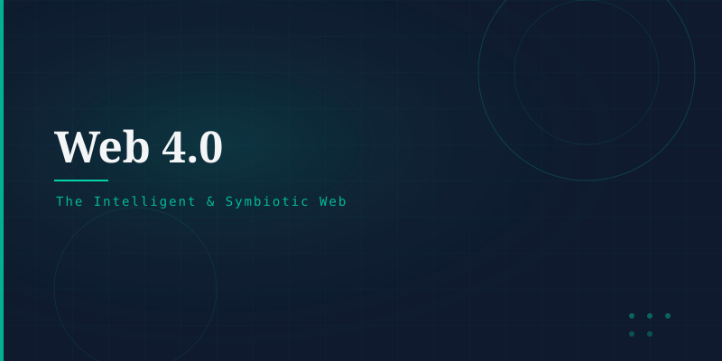

What is Web 4.0?
Web 4.0, sometimes called the Symbiotic Web or Intelligent Web, is a conceptual next phase in the evolution of the Web. It envisions a Web that is deeply integrated with artificial intelligence, the Internet of Things (IoT), augmented/virtual reality, and brain-computer interfaces — creating a seamless, proactive, and context-aware digital experience.
Key Characteristics
Every interaction is enhanced by AI that understands context, intent, and emotion — not just keywords.
Billions of physical devices — cars, appliances, sensors — connected and interacting with the Web seamlessly.
The Web extends beyond screens into AR glasses, wearables, and ambient environments.
Machines and humans collaborate fluidly; the Web anticipates needs before they are expressed.
Emerging Technologies
Large Language Models (LLMs) and generative AI · Brain-Computer Interfaces (BCIs) · Spatial computing (AR/VR) · 5G/6G connectivity · Digital twins · Autonomous agents · Ambient computing.
Trajectory
Web 4.0 is not a defined standard but a directional vision. The rapid advance of AI (including large language models), the proliferation of IoT devices, and the expansion of immersive computing suggest the boundary between the digital and physical world will continue to blur — moving toward a Web that is less browsed and more experienced.
From reading (Web 1.0) → interacting (Web 2.0) → owning (Web 3.0) → symbiosis (Web 4.0).